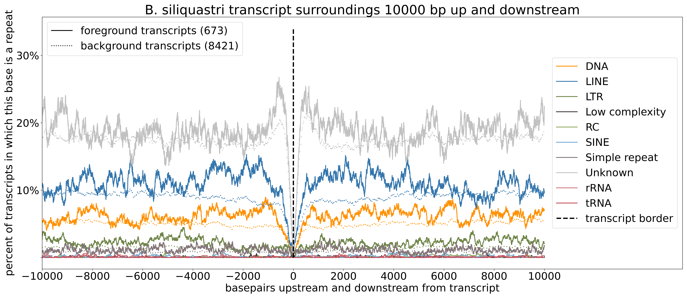
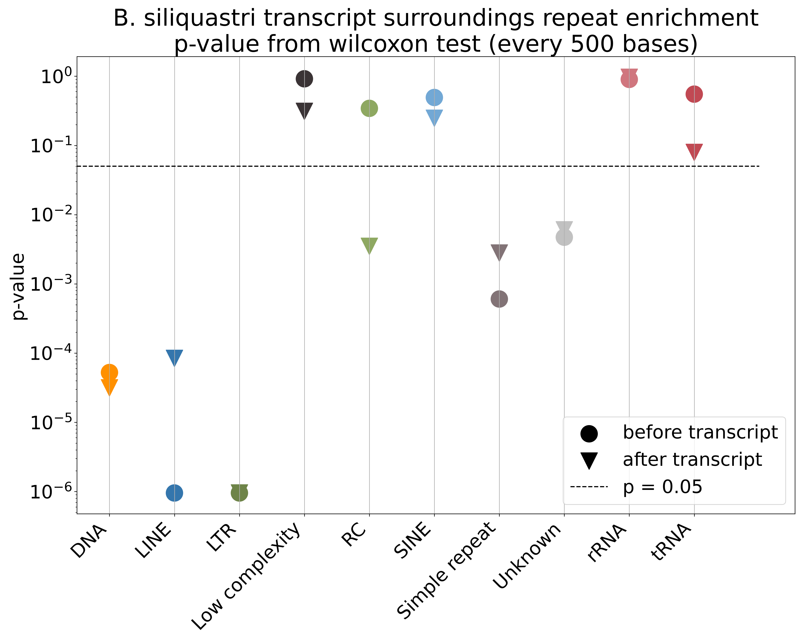
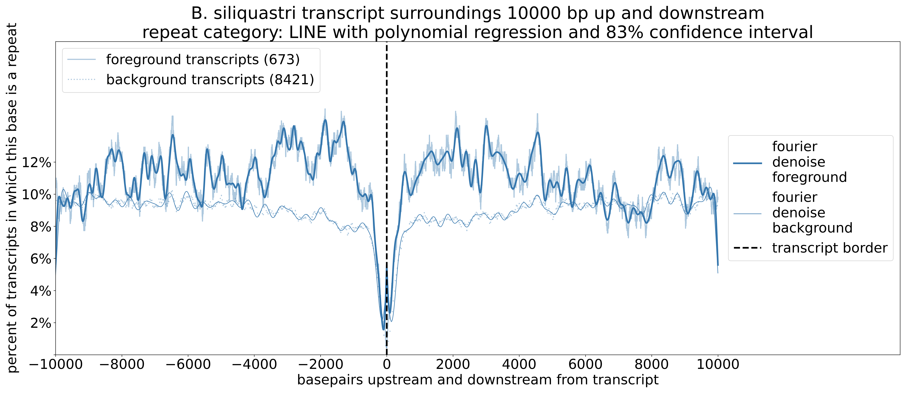
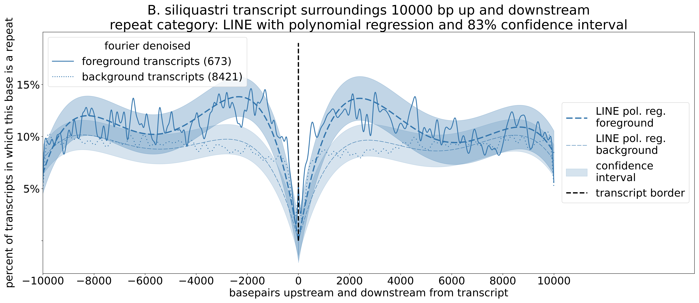

Installation
Download the latest release and unzip it, and then you can just run the python script as described in quickstart below. You might have to install a few external dependencies manually (see requirements.txt) but they are all commonly used libraries easy to install with pip.
See dependencies list
It is important that numpy is at least v2.x, because this program uses np.nan. numpy v1.x uses np.NaN instead,
and will not work! If you have numpy v1.x installed and do not want to update it, you can change all instances of np.nan to np.NaN
and it will work.
If you are installing several dependencies manually, I suggest creating a new python virtual environment (this works similarly to conda). See tutorial here.
Summary
ReVis has two different run modes, a genome-wide mode that is purely for visualizing repeat abundance in a histogram across scaffolds, and a gene surroundings mode that includes statistical analysis to compare repeat abundance in the surroundings of two sets of genes.
A genome-wide stacked histogram showing repeat abundance as annotated by Repeatmasker. Optionally, one or two gene annotations of the same assembly can be included to show the gene density in the same windows.

The user can provide a set of foreground and background gene IDs and an interval length in the transcript-surroundings mode. The cumulative abundance of each repeat category is plotted for both foreground and background set for individual bases, not averaged over windows, and statistical analysis is performed (see details below).

Quick start
see all possible options with the python3 ReVis.py -h flag or at the end of this documentation.
python3 ReVis.py \
--masker_outfile your_assembly.fna.out \
--masker_out_gff your_assembly.fna.out.gff \
--out_dir ./ \
--species_name Y_species \
--window_length 1e6 \
--plot_overlap_filtered \
--verbose \
--plot
Input files (file extensions taken from repeatmasker output defaults)
- repeat annotations:
your_assembly.fna.out - scaffold sizes:
your_assembly.fna.out.gff(contains ##sequence-region comments with the contig name and length, so you don't need to give an assembly) - Optional input files (not included above):
assembly_gene_annotation_1.gffassembly_gene_annotation_2.gff
Parameters
- Species name (
strformatted like D_melanogaster for Drosophila melanogaster) - window length (
intbasepairs, can be in scientific notation like 1e6 for 1Mb) plotortablemode
see all possible options with the python3 ReVis_transcript_surroundings.py -h flag or at the end of this documentation.
The computation here is split into two parts because part 1 can take very long:
- compute tables of by-base transcript presence counts for each repeat category
- make plots and compute statistical analysis based on tables
See the files in example_data to check formatting requirements for the transcript ID lists.
python3 ReVis_transcript_surroundings.py \
--compute_tables_from_list \
--out_dir ../../example_data \
--masker_outfile ../../example_data/bruchidius_siliquastri_repeats.fna.out \
--annotation_gff ../../example_data/bruchidius_siliquastri.gff \
--all_list ../../example_data/overlap_all_transcripts_B_siliquastri.txt \
--sig_list ../../example_data/overlap_sig_transcripts_B_siliquastri.txt \
--species_name B_siliquastri \
--polreg_fourier_denoise \
--bp 500 \
--verbose
If you have generated the tables in a previous run
python3 ReVis_transcript_surroundings.py \
--plot \
--out_dir ../../example_data \
--all_before_table ../../example_data/B_siliquastri_cumulative_repeats_before_all_transcripts.txt \
--sig_before_table ../../example_data/B_siliquastri_cumulative_repeats_before_sig_transcripts_90th_GF_size_percentile.txt \
--all_after_table ../../example_data/B_siliquastri_cumulative_repeats_after_all_transcripts.txt \
--sig_after_table ../../example_data/B_siliquastri_cumulative_repeats_after_sig_transcripts_90th_GF_size_percentile.txt \
--num_transcripts ../../example_data/B_siliquastri_transcript_numbers.txt \
--species_name B_siliquastri \
--polreg_fourier_denoise \
--verbose
The original purpose of this tool was to look at transcripts that are in significantly rapidly expanding gene families according to CAFE5. When you have the same pipeline, you can provide these output files and the software will infer foreground and background transcript ID lists from that automatically
python3 ReVis_transcript_surroundings.py \
--compute_tables_from_OG \
--out_dir ../../example_data \
--masker_outfile ../../example_data/bruchidius_siliquastri_repeats.fna.out \
--annotation_gff ../../example_data/bruchidius_siliquastri.gff \
--orthogroups ../../example_data/N0.tsv \
--CAFE5_results ../../example_data/CAFE5_Base_family_results.txt \
--species_name B_siliquastri \
--polreg_fourier_denoise \
--bp 500 --GF_size_percentile 90 --verbose
--GF_size_percentile ensures that the only transcript IDs are in truly expanding gene families, not just gene families that are in significantly rapidly
evolving orthogroups accodring to CAFE, because this might include orthogroups that are expanding in other species only and not the one of interest here.
Genome-wide mode
Download the latest release and just run ReVis.py like a normal python script.
The dependencies are listed in requirements.txt, they are only commonly used python packages and can be installed with pip, see installation instructions above.
The script is using the output files generated by Repeatmasker, and optionally one or two genome annotations based on the same assembly (contig names and coordinates have to match!).
Results can be plotted in a stacked histogram (--plot mode) or returned as tsv files (--table mode, requires the annotation!
This contains the bases covered by each repeat category in a window interval).
Contigs are sorted by size decreasing in the plot.
Overlapping repeat annotations
Repeatmasker allows overlapping repeat annotations. They say that this is to detect e.g. when one transposable element inserts itself into an already existing repeat.
These overlaps can result in a repeat percentage of over 100% in a window. For plotting purposes, I have implemented a method of removing these overlaps.
The overlap is filtered by cutting the beginning of the current repeat based on the end of the previous one. Below is a quick example of two repeat categories
- and * that overlap in their annotated position, and how my script handles these overlaps.
unfiltered overlapping repeats
-------------------- ---------------- -------------
************************************* *************************
filtered repeats that do not overlap any more
--------------------***************************** *************************-----
(Repeats completely inserted into other repeats that span a wider region are filtered out completely)
When I test filtering vs. no filtering on some species, the "shape" of the plots tends to stay the same, and the repeat proportions are similar to a certain extend. However, since some repeat categories are more prone to be completely inserted than others, this can change the proportions. If you want to run the overlap filtered version to avoid repeat abundances >>100%, you should also do a test run with unfiltered plotting to make sure that you are not greatly distorting the repeat proportions.
Details
You can run in two modes, --plot mode or --table mode. Plot mode returns a plot with a stacked histogram of all the repeat categories
(overlap filtered by default! Repeat annotations can be on top of each other, where two or more repeats cover the same stretch of sequence, which can result in a >100%
repeat coverage in some rep_windows. You can filter out repeat categories that overlap with others so that each base is only covered by one repeat annotation.
This filtering warps the category proportion in some windows, because it is likely that there are more bases of some categories removed than others.
See get_repeat_abundance function documentation for details).
If you include a genome annotation, a line for the number of annotated genes in the same windows is added.
You can add up to two annotations to compare them. Table mode returns the same by-window information as a tsv file with the proportion of basepairs in each window covered by
each repeat category (NOT overlap filtered, so there can be more bp covered by all repeats in a window than the number of masked bp or even the window length) and also the
number of bp and ratio covered by coding regions (exons). If the masked assembly is given it will also include the number of unmasked bp in each window.
The runtime depends on the overall repeat content and on how fragmented the assembly is. I have tried my best to optimize, but if your assembly is long and fragmented, it takes long to loop through many small contigs, and if there are many repeats, it takes long to sum all of them up per window. Short windows increase the total number of windows computed and plotted, which also increases the runtime. In any case, the longest runtime i managed to achieve with my data was 3:30 min.
toggle down for flowchart of how it works
graph TD;
infile_out(your_assembly.fna.out);
infile_out -- parsing --> rep_annot{{Class: repeat annotation}};
infile_annot(annotation.gff);
infile_annot -. parsing .-> gene_annot{{Class: gene annotation}};
rep_annot -- overlap filtering --> overlap_filt{{overlap filtered repeat annotation}};
overlap_filt --> win_ab{{window abundances by category}};
rep_annot -. optional .-> win_ab
rep_annot --> tr_count(transcript counts foreground and background);
tr_count --> win_prop{{window abundances in percent by category}}
win_ab --> win_prop
infile_gff(your_assembly.fna.out.gff);
infile_gff --> contig_coords(scaffold lengths);
win_prop --> plot([Plot stacked histogram])
contig_coords --> plot
gene_annot -. optional .-> plot
different possible input files
There is two very similar repeatmasker output files, *.out and *.ori.out.
I have noticed that there are some repeat categories that are missing from *.ori.out, and I am unsure why.
In my case it was specifically low complexity regions that are in the repeatmasker .tbl summary and in .out but not in ori.out.
My script can parse both, but double check which one you want to use!
Good luck!
Gene surroundings mode
I am using "gene" and "transcript" kind of interchangeably in this section, but for the gff file they are not identical. ReVis was programmed with transcript feature IDs in mind (which is why the script for this runmode is called ReVis_transcript_surroundings.py), but gene IDs should also work (no guarantee here)
This mode creates count tables of repeat presence per base in the transcript surroundings and then plots them.
The tables can be generated based on orthofinder and CAFE output directly (--compute_tables_from_OG) or from lists of transcript IDs (--compute_tables_from_list).
It also plots individual polynomial regressions for each repeat class with 83% confidence interval. Curves can be smoothed with --polreg_win_smooth
using means of either overlapping or nonoverlapping windows, or --polreg_fourier_denoise using fourier denoising.
Details
The data is generated and saved into four tables prior to plotting. Each table has a row for each repeat category, and each column is one base. The number in the cell is how often this base position is annotated with a repeat of one category in all the transcripts considered. The repeats are not overlap filtered the way they can be for the whole genome histogram since that would distort the statistical analysis.
The statistical analysis consists of:
- Wilcoxon test
- Polynomial regression
Test for enrichment of repeats in foreground transcripts via difference in mean using the Wilcoxon test. Downsampled to every (see output plot) bp to increase sample independence. This is a one-sided test that only tests for enrichment not depletion.

Test for enrichment by fitting polynomial regression curves to foreground and background curves, calculating the confidence interval, and checking for overlap. A significan tidfference can be determined through nonoverlapping 83% confidence intervals (not 95%! see this blog post, as well as Goldstein and Healy (1995).)
Example for LINEs:
Fourier denoising

83% confidence intervals: significant enrichment of LINEs ca 3 kb up- and downstream.

These are the output tables:
- from foreground sequences:
before transcript(upstream)after transcript(downstream)
- from background sequences:
before transcript(upstream)after transcript(downstream)
- one file that contains the
number of transcriptsused to calculate the foreground and background tables, to use for calculating the percentages when plotting
You can specify how many bp up and downstream from a transcript border you want to check (default 500). This is not a fast program, so I have found that 10k bp is a nice compromise of seeing interesting dynamics and it not taking too long. The test plot with B. siliquastri took less than 10 mins for 10k bp, but more repeat rich genomes will take longer, as will longer foreground and background lists. When I run it with a different species that has a 1 Gb genome, 70% repeats and I set 10 kb up and downstream it takes almost two hours.
You can pass these additional parameters:
--bp(how many bp up- and downstream of a transcript to compute and plot)--polreg_fourier_denoiseor--polreg_win_smoothfor smoothing the curves for the statistical analysis
toggle down for flowchart of how it works
graph TD;
infile_out(your_assembly.fna.out);
infile_out ==> rep_annot{{Class: repeat annotation}};
rep_annot --> tr_count(transcript counts foreground and background);
infile_annot(annotation.gff);
infile_annot ==> gene_annot{{Class: genome annotation}};
OGs(orthogroups);
CAFE(CAFE5 outfile);
OGs -.-> tr_list(foreground and background transcripts list);
CAFE -.-> tr_list
gene_annot ==> filt_gene_annot{{Class: filtered genome annotation}};
tr_list --> filt_gene_annot
filt_gene_annot ==> loop_tr(loop through foreground and background transcripts);
rep_annot ==> loop_tr
loop_bp(loop through all bases before and after for each transcript);
loop_tr --> loop_bp
loop_bp --> loop_tr
loop_tr ==> rep_counts(repeat counts at each base);
rep_counts ==> rep_prop(repeat proportions at each base);
tr_count --> rep_prop
rep_prop --> out_tab@{ shape: docs, label: "output tables foreground/background and before/after transcript, and transcript counts" };
tr_count --> out_tab
rep_prop ==> stats{statistical analysis};
rep_prop --> plot_all([Plot transcript surroundings of all categories])
stats ==> stats_out([plot results of statistical analysis])
stats --> stats_tab@{ shape: docs, label: "Wilcoxon test output" };
out_tab -. in table mode .-> rep_prop
Troubleshooting
- If annotation parsing does not work:
Potentially there is something wrong with the nested feature IDs in the gff, try to use agat_sq_manage_IDs.pl to make a version that forces a correct feature nestedness. Mind that this changes transcript IDs! You might have to associate them to potential foreground and background lists.
- python error about np.NaN:
You are likely using
numpy v1.xand not the requirednumpy v2.x
Citation
Please cite Trabert et al. 2026 with this DOI: https://doi.org/10.5281/zenodo.18669483. Thank you! Link to zenodo.